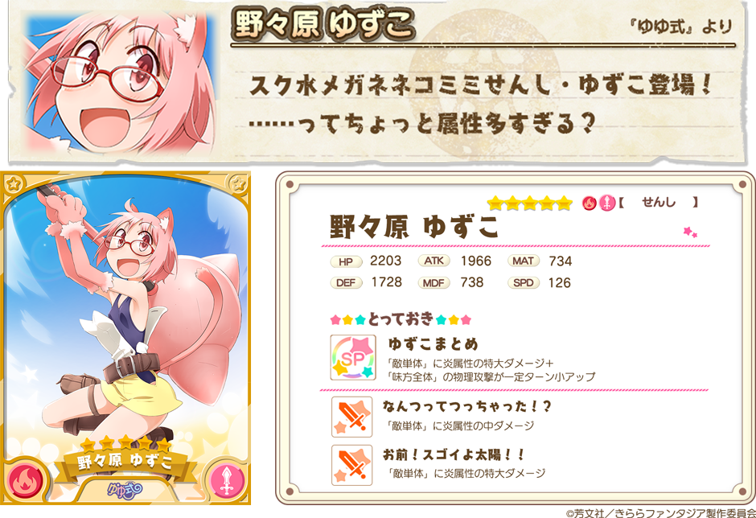
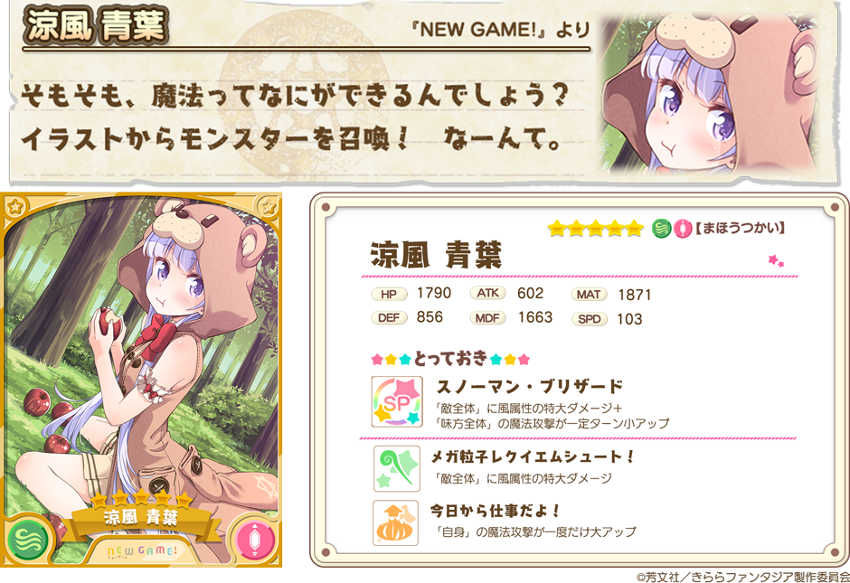

『きららファンタジア』をご利用いただき、誠にありがとうございます。
12/11（月）より、『きららファンタジア』のサービスを開始いたしました。
サービス開始を記念しまして、『キャラクター召喚』を開催させていただきます。
2017年12月11日 7:00 ～ 2017年12月18日 13:59
※12/11からの緊急メンテナンスにともない、開催期間を延長致しました。
10連召喚では★4以上のキャラクターが1枚以上確定します。
初回のみ星彩石300個で10連召喚が可能です。



※表示されているキャラクターイラストは進化前のものです。
※表示されているステータスは、表示キャラクターの最大Lv（限界突破4回）時のものです。
・提供割合に関しましては、ゲーム内の召喚画面 提供割合ボタンからご確認ください。
・新キャラクターのステータスやスキル内容に関して、開始時に変更させていただく可能性がございます。
今後とも『きららファンタジア』をよろしくお願いいたします。